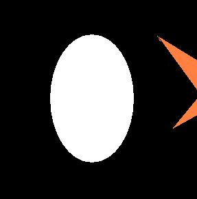

Estudio estadístico
 De: La Frikipedia, la enciclopedia extremadamente seria.
De: La Frikipedia, la enciclopedia extremadamente seria.
«Oh Kent, la gente se inventa estadísticas con tal de demostrar cualquier cosa, y eso solo lo sabe el 14% de la gente.»
~ Homer Simpson sobre las estadísticas
La estadística es la ciencia según la cual si tu tienes dos gallinas y yo ninguna, ambos tenemos una gallina. Es la más generosa de las ciencias (salvo para el que tiene dos gallinas, claro), aunque más de uno, si le dan a elegir, antes que la gallina del vecino prefiere tener una buena polla(no se interprete de manera homosexual), pero de eso la estadística no entiende, ni falta que hace.
La estadística, en general, se trata de una ciencia no científica. Ya que existe un 0,5% de posibilidades de que acierte. Al igual que el resto de las ciencias no científicas como:
- Física: antes la gravedad hacía caer manzanas. Actualmente la gravedad de que te fumes un porro es muy alta para tus padres.
- Medicina: la menos científica de todas. Antes el vino era bueno, luego el vino era malo y ahora vuelve a ser bueno. Lo mismo para el tabaco, para dar el pecho y para hacerse pajas.
- Matemáticas: amos ya. Desde que dejas el colegio, las matemática se hacen con letras. Pero... ¡¡LA CALCULADORA SÓLO TIENE NÚMEROS!! (por lo menos la de los chinos).
- y un largo etc y ... que mejor no mencionar para evitar problemas con las universidades y científicos no científicos en general.
Los estudios estadísticos son el resultado de aplicar las reglas de la estadística en encuestas realizadas. Si además del hecho de que la propia estadística es una ciencia no científica, tenemos en cuenta quienes son los encuestados podemos concluir, en que si hacemos caso a estos, podemos considerarnos tontos de capirote.
Para comprobar cómo funciona un típico estudio estadístico véase Tapa.
Historia
Los estudios estadísticos fueron creados 1.000 siglos después de la invención de la propia estadística (existe un 0,0000099% de que este dato sea real). A pesar del descubrimiento de la estadística 80.000 siglos antes, nadie fue tan tonto como para pagar a alguien para obtener unos resultados cuya probabilidad de que fueran reales oscilaba entre el 0,0000001% y el ya mencionado 0,5%.
La estadística nace, no se hace
En nacimiento de la estadística se produjo, en el año 1499, por la imperiosa necesidad de evitar que la universidad de psicología, diese a este mundo una media de 500 millones de nuevos psicólogos por minuto. Gracias a la inclusión (no se si esta palabra existe) de esta nueva asignatura, la cantidad se redujo a 100 millones de psicólogos por minuto.
Consolidacimientociento de la estadística en las empresa, nacen los estudios estadísticos
200 siglos después aparecieron las empresas. Y con las empresas los directores. Y con los directores los amigos de los directores. Y con los amigos de los directores, los amigos estadísticos de los directores. Fue entonces cuando la empresas empezaron a pagar estudios estadísticos gracias al tráfico de influencias.
Estadísticos Famosos
 El futuro de los estudios estadísticos
- Está claro que no hay casi ninguno. Es más, casi todos son desconocidos.
En un estudio realizado por un estadístico realmente famoso, el Profesor Oppenheimer, fueron consultados 100 estadísticos al respecto. El 98% de ellos considera que deberían ser más conocidos y hasta famosos. El 2% restante no sabe o no contesta, del cual, el 50% fue el gilipollas que hizo la encuesta.
No obstante, en un estudio realizado por su rival, el Profesor Belvedere, otros 100 estadísticos consultados entienden que esa encuesta está falseada, pues nadie sabe quienes son los estadísticos consultados en ella. Oppenhaimer, en su artículo publicado en la revista Sciencie for Dummies, titulado "¡Callate idiota!" replica señalando que tampoco se sabe quiénes son los estadísticos consultados en la segunda encuesta.
Para solventar el problema, la Academia Mundial de Estadística propuso hacer una nueva encuesta entre estadísticos conocidos, a la que gustosamente se sometieron ambos profesores Oppenhaimer y Belvedere.
El resultado fue:
Estadísticos consultados: 2.
A Favor de la encuesta de Oppenhaimer: 2 votos.
A favor de la encuesta de Belvedere : 1 voto.
A la vista de que hubo más contestaciones que encuestados, la Academia está investigando a ambos profesores, para saber quién fue el que hizo trampa.
El futuro de los estudios estadísticos
Llegar a una conclusión de hacia dónde puede llegar la estadística en un futuro próximo (cuando los robots dominen el mundo) o lejano (cuando los perros se coman a los robots y dominen el mundo después de acabar con las existencias de antiácidos de las farmacias) haría necesario recurrir a los propios estudios estadísticos. Entramos entonces en un problema recursivo equiparable al huevo y la gallina*. Por otra parte, gracias a los estudios estadísticos sabemos que la probabilidad de que la conclusión sea cierta está entre un 0% y un 100%. Así que mejor no perder el tiempo.
problema del huevo y la gallina: para que la gallina obtenga el calcio necesario
para fabricar un huevo...¿la gallina come huevos?
Estudios estadisticos dignos de mención
- El 71.5% de las veces que hacen rsp a una persona se le rompen de 1 a 82 costillas.
- La tasa de natalidad de un país es el doble que la tasa de mortalidad; por lo tanto, una de cada dos personas es inmortal.
- El no tener hijos es hereditario; si tus padres no tuvieron ninguno, hay mas de un 95% de probabilidades de que tu tampoco los tengas.
- El 50% de las personas son la mitad.
- La probabilidad de tener un accidente de tráfico aumenta con el tiempo que pasas en la calle. Por tanto, cuanto mas rápido circules, menor es la probabilidad de que tengas un accidente.
- El 33 % de los accidentes mortales involucran a alguien que ha bebido. Por tanto, el 67 % restante ha sido causado por alguien que no había bebido. A la vista de esto y de lo anterior, esta claro que la forma mas segura de conducir es ir borracho y a gran velocidad, a no ser que seas inmortal o tus padres no tengan hijos.
Interpretación de resultados estadísticos
Para una gran parte de la población mundial (todos los que son de letras) es difícil sacar conclusiones a partir de todas esos números que mencionan en televisión. Por este motivo, a continuación, traduciremos algunas típicas frases usadas por la estadística:
- Existe un 50% de probabilidades de que salga cara: esto es, que puede que salga cara, o puede que no salga. Nadie lo sabe, excepto los adivinos.
- Hay un 30% más de francés es que de españoles que puede echar un kiki todos los días: la traducción para esta frase es "los franceses son unos fantasmas".
- Existe un 99,99% de que este software falle: por supuesto este argumento lo da el fabricante. Lo que en realidad quiere decir es "tenemos muchas ganas de vender nuestro software, pero si falla no nos hacemos responsables, y puedes estar seguro de que fallará".
- Zapatero obtendrá un 52% de los votos frente al 51% del PP: esto dicho por la primera quiere decir "somos la televisión del estado, el estado es zapaterista y por tanto no podemos admitir que el PP va a ganar por aplastante mayoría". Dicho por otro medio se puede interpretar inversamente.
- La edad media (la del señor de los anillos no, la edad media en años) para independizarse en España son los 30 años: esto significa que la edad media para independizarse de todos los encuestados (y seguramente estas encuestas se realizaron en una universidad) es de 30 años. Pero a que nadie conoce a nadie con menos de 40 años que se haya independizado.
- Existe una probabilidad de 80% de que llueva mañana en Toledo: cualquier dato dado en la predicción del tiempo que se aproxime al 50% no va a ser aceptado (véase el primer punto). Solución: no inventamos otra probabilidad más alta. Pero puede que llueva o puede que no.
¿Sabías que...
- ...según estudios estadísticos, la probabilidad de que triunfase la república en España era de un 200%?.
- ...según estudios estadísticos, la probabilidad de que un político
se haga una paja robe es de un 0,0000000000000000001%?.
- ...según estudios estadisticos, la probabilidad de que el mundo muera por gripe porcina es de un 101%?
- ...según estudios estadisticos, la probabilidad de que te guste el pajaculo es un 51%?
- ...según estudios estadisticos, la probabilidad de que seas homosexual es de 65.3%?
- ...más vale pájaro en mano que ciento volando, a no se que la estadística demuestre lo contrario?.
- ...existe una probabilidad no probada según estudios estadísticos del nosesabe% de que llueva mañana en Toledo?.
- ...según estudios estadísticos, todos menos tú tienen una probabilidad del 99,99% de mojar el churro en verano?.
- ...la culpa no es del hombre del tiempo sino de los estadios estadísticos?.
- ...la probabilidad de que caiga cara al lanzar una moneda es 1 de 4(que caiga cruz, que caiga cara, que caiga ala mitad o que no caiga).
- ...3 de cada 4 personas piensa que el cuarto es gilipoyas?
- ...los estudios estadisticos lo inventó: Antena 3 ?
- ...tienes un 93% de morir ahogado por una eyaculación ejecutada en uno de tus orificios nasales?
- ...hay un 28,5% de que mañana comeras comida para humanos?
P.D: Según estudios estadísticos no realizados, la probabilidad de que algo de esto sea cierto es de un 99,99%.
- ...el 65.3% cree que tu mamá es hombre??
- ...Hay un 100% de probabilidades de que esta estadistica falle??
Autor(es):
- Krusher
- Nexo
- Dung3onMast3r
- Homer Tunder
- Frikiman
- Aque
- Masterfriki
- Frikih
- Pockets
- Cibercrank
Frikipedia 2005-2016, Licencia
GFDL 1.2 - Extraído por FrikiLeaks